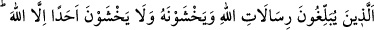

“Allâh’ın, kendisine helâl kıldığı” Zeynep’le evlenmesi gibi taksim ve takdir ettiği
“şeyde Peygamber’e herhangi bir vebâl yoktur.” darlık, güçlük ve zorluk olması
hikmete uygun ve doğru değildir. “Önce gelip geçen” peygamberler “arasında da
Allâh’ın âdeti böyle idi.” Çünkü onlara nikah ve diğer hususlarda geniş imkanlar
verilmiştir. Mesela Dâvud (a.s.)’ın yüz hanımı, üç yüz cariyesi vardı. Oğlu Süleyman
(a.s.)’ın üç yüz hanımı ve yedi yüz câriyesi vardı. İşte nikah konusunda sana verilen
genişlik, geçmiş peygamberlere verildiği gibidir.
“
” masdar yerine konulmuş bir isim olup kendisinden önce ifâde edilen
vebal/darlık/ güçlük olmamasını te’kid etmektedir. Yâni Allah vebal/güçlük olmaması
âdetini koydu ve bunu tâkip edilip uygulanan bir yol/usûl kıldı, demektir.
el-Müfredât’ta der ki: “
” kelimesi, hem zaman hem de mekan hakkında kullanılır.
Ancak zamanın geçtiği tasavvur edildiği için dil bilimcileri “
” sözünü zaman
geçti ve gitti şeklinde açıklamışlardır.” Fakir (Bursevî) der ki: Aslında geçip
gitmek/boş olmak zaman ve mekanın hâlidir. Çünkü bu sözden maksad, zaman ve
mekanda olanların ölmesiyle veya geçip gitmesiyle kendilerinde olanlardan boş
kalmasıdır. Bu, zaman ve mekanın kendilerinde olanlardan boş olmasından mecazdır. İyi
anla.
“Allâh’ın emri mutlaka yerine gelecek, yazılmış bir kaderdir.” ve kesinleşmiş bir
hükümdür. el-Müfredât’ta der ki: “Burada ‘kader’ kelimesi, ezelde belirlenen hükme,
onun levh-i mahfuzda yazılmasına ve “Rabbin yaratılış, ahlâk, rızık ve ecel işini
bitirip tamamladı.”[221] hadîsinde îmâ edilen hususa işâret etmektedir. “Yazılmış/takdir
edilmiş” ifâdesi ise “O her an yaratma hâlindedir.” (er-Rahmân, 55/29) âyetinde îmâ
edilen peyderpey/anbean meydana gelen şeylere işârettir. Burada ayrıca şuna da işâret
vardır: Allah bir peygamberin veya velinin işini takdir ettiği zaman bu hususta ona bir
vebal/güçlük yaratmaz. Bu husus zâhirde insanlar nezdinde bir tür eksiklik sebebi gibi
görülse de Allah bunu bir eksiklik sebebi olarak da yaratmaz. Peygamberler ve veliler
üzerinde cereyan eden nice hikmetlere dayanan, kendisinde hatâ, yanılma ve abes
olmayan kazâ-i mübrem/kaçınılmaz kaderdir.
Pîrimiz dedi ki: Yaratma kaleminde hatâ olmadı,
Temiz göze âferin, onun hatâsını örtsün!
39. O peygamberler ki Allâh’ın gönderdiği emirleri duyururlar, Allah’tan
korkarlar ve O’ndan başka kimseden korkmazlar. Hesap görücü olarak Allah